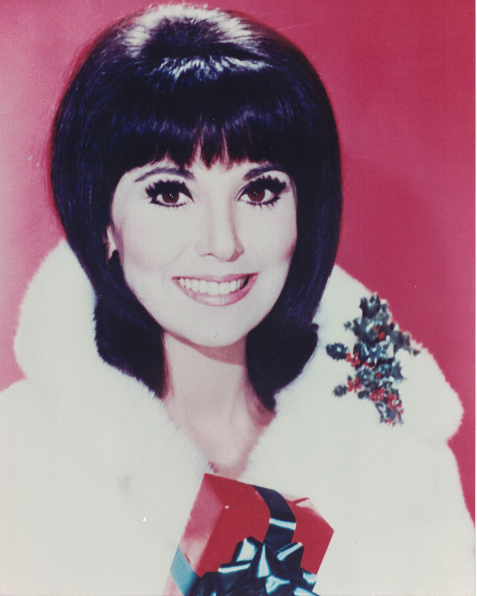

Product No. HEC-0035
$12.95
Shipping: $8.95
Description
8x10 Color Photograph
Full Description
Marlo Thomas is an American actress, producer, author, and activist best known for starring as Ann Marie in the groundbreaking television sitcom "That Girl." Born Margaret Julia Thomas on November 21, 1937, in Detroit, Michigan, she is the daughter of entertainer Danny Thomas. Thomas became a major television star with "That Girl," which aired from 1966 to 1971. She played an aspiring actress living independently in New York City, and the series was notable for presenting a young single woman pursuing her own career and ambitions rather than being defined primarily by marriage or family life. Her other television and film appearances include "Jenny," "Thieves," "Nobody's Child," "Friends," "Law & Order: Special Victims Unit," and "The New Normal." She also appeared on Broadway and earned acclaim for dramatic as well as comedic performances. Thomas created and produced the influential children's project "Free to Be... You and Me," which began as a record and book before becoming a television special. The project promoted individuality, equality, and freedom from traditional gender stereotypes. Throughout her career, Thomas has received numerous honors, including Emmy Awards, a Golden Globe Award, a Grammy Award, and the Presidential Medal of Freedom. She has also been closely associated with St. Jude Children's Research Hospital, founded by her father, and has spent decades supporting its fundraising and charitable work. Marlo Thomas remains an important figure in American television history and a recognizable name among collectors of classic television, entertainment memorabilia, and celebrity autographs.
Condition
Excellent condition